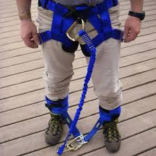
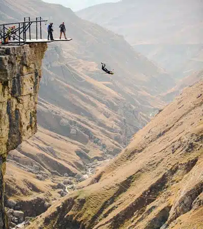
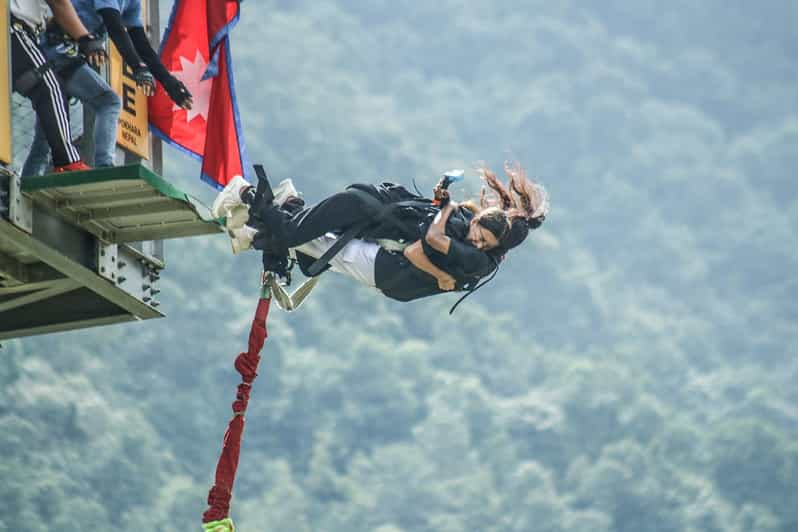

Equipment

Bungee jumping equipment has evolved significantly to ensure maximum safety and thrill. Modern bungee cords are made from multiple strands of rubber, providing both elasticity and strength. The harnesses used are designed to distribute weight evenly and securely. Advanced braking systems and backup measures are in place to ensure a safe jump. The technology behind bungee jumping is constantly being improved to enhance the experience while maintaining the highest safety standards.
Locations

Bungee jumping offers an unparalleled adrenaline rush. The performance aspect of bungee jumping is all about the freefall and the rebound. The initial jump provides a heart-pounding drop, followed by the exhilarating bounce back. Different locations offer varying heights and settings, from bridges to cranes to natural cliffs, each providing a unique experience. The performance of the jump is influenced by the height, the type of jump (e.g., standard, tandem, or water touch), and the surrounding environment.
Tandem

If you seek the ultimate thrill and are not afraid of heights, bungee jumping is an excellent choice. For those who prefer a more controlled environment, jumps from cranes or platforms might be ideal. If you enjoy natural settings, jumping from bridges or cliffs offers breathtaking views and a closer connection to nature. Tandem jumps are perfect for sharing the experience with a friend or loved one. Each type of jump caters to different preferences, ensuring that everyone can find their perfect bungee jumping adventure.